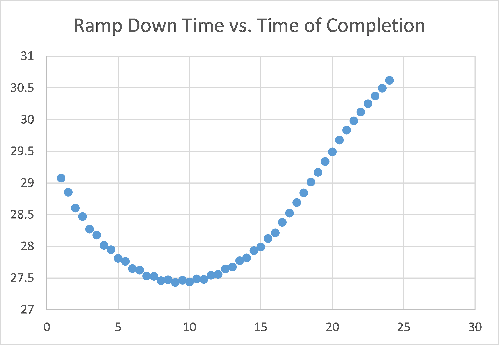

Drone Operator
Monitoring
I joined a project at the Center for Applied Brain & Cogntivie Sciences (CABCS) in the summer before my Senior year at Tufts University. As an Engineering Psychology student, my role was to assess the cognitive state of a drone operator and use that as input into an adjustable autonomy algorithm in a human-drone system.
Introduction & Project Background
I began my research at the Center for Applied Brain & Cognitive Sciences (CABCS) in May of 2016. My research team is exploring the novel concept of Continuously Adjustable Autonomy (CAA), an extension of Adjustable Autonomy (AA). AA is the process by which manual control is leveraged in a human-in-the-loop system when the operator becomes stressed or overly taxed, thus increasing the chance of human error. When this happens, the machine in the system will assume more control until the operator can return his or her full focus to the system. In CAA, the autonomy algorithm responsible for this change in manual control will modulate levels of autonomy on a continuous scale as opposed to a discrete shift. We hypothesize that this will be beneficial to team performance due to more precise tuning of manual control relative to the cognitive state of the operator.
The Research Problem
As an Engineering Psychology major, I was tasked with determining a reliable method of operator monitoring to determine the pilot's cognitive state. This means that I needed to determine whether or not a drone pilot was stressed, distracted, or cognitively overloaded. Part of my job was to select which of these factors I would choose to focus on. After all, attention is very different from cognitive workload. On top of this decision, I needed to create a system by which I could determine the operator's state. The image on the right displays the overall experimental hardware setup.
Brainstorming Solutions
The problem I needed to solve was broad and open-ended. I began by attempting to incorporate my knowledge as an Engineering Psychologist. I looked online at the feasibility of certain operator monitoring schemes. I also talked to one of my Advisors, Tad Brunye, who gave me feedback on certain designs. Some of the designs I reviewed assessed the operator’s physiology directly, others relied on kinematic sensors to infer the operator’s state.

Operator Monitoring Table
After many hours of brainstorming and research, I compiled the various options for operator monitoring that identified into one comprehensive table. The table featured 16 different potential solutions and compared them across multiple metrics, including the pros and cons, cost, and input into the autonomy algorithm. Additionally, each option was classified based on which cognitive component category it fell into. For example, while some designs assessed an operator’s stress level, other designs monitored cognitive workload.

Solution Example: EEG
EEG, or electroencephalogram, is a brain imaging tool that measures electrical activity in the brain using electrodes attached to scalp. Specifically, EEGs measure voltage fluctuations resulting from ionic current within the brain neurons. This technique has amazing temporal resolution, meaning that it can detect and track changes in the brain almost immediately after they happen. Due to varying shapes of the brain across individuals, this method unfortunately lacks in spatial resolution, or the ability to determine what part of the brain the signals are coming from. In assessing the feasibility of this option, I learned that determining brain patterns that corresponded to changing stress levels of a drone operator would take several months to characterize. Given that we needed a faster solution (despite the directness of this option), we decided to pursue other routes.
Solution Example: Empatica E4
The Empatica E4 Wristband was an intriguing potential solution to the operator monitoring problem. This wearable device records heart rate, skin conductance, temperature, blood volume pulse, and accelerometer data and can stream this data in real time. Given the robust functionality of this device, the E4 was one solution that heavily looked into. The human stress response is very closely linked with skin conductance or, electrodermal activity. Therefore, I hypothesized that the higher the skin conductance of the drone pilot, the more stressed they would be. We could, therefore, use this information as input to the adjustable autonomy algorithm, giving the drone more autonomy when stress state could compromise a pilot’s ability.

Solution Example: Empatica E4 Testing & Analysis
I attempted to classify certain patterns of the physiological data logged by the E4. I began a trial by wearing the wristband for 5-10 minutes in order for it to calibrate to my skin and heart rate. Then I would perform a trial flying a drone under different conditions varying in “expected” stress levels. In other words, I matched my own self-reported stress response with the data recorded during that time (done via watching a video recording taken during the trial). I analyzed the video for any salient features of the data, such as extraneous arm movements or “close calls” in which I almost flew the drone into an object. The image on the right shows an example of my trial coding. Although I certainly isolated some patterns of the EDA, it proved to be too irregular as well as had poor temporal resolution. For the immediacy of input that the autonomy algorithm requires, EDA would not work as a metric either.

Selected Solution: Pixy Cam & Arduino
After seeing a Pixy Cam sitting in the lab for a fellow researcher’s project, I decided to explore the possibility of adapting it to my own research. A Pixy Cam is a small, Arduino-based camera that is used to detect color signatures. It boasts surprising accuracy as well as offers real-time classification of the colors in a live stream of data. It may initially seem like this option is not suitable for my purposes. After all, how could this device be used to assess an operator’s cognitive state?
Pixy Cam & Arduino Development
After acquiring the necessary parts, I began to assemble my system. I began by testing out the capabilities of the Pixy Cam. I connected the camera to an Arduino 101. Next, I cut out bright colored paper and tuned the camera to distinguish between different colors. Once I had an understanding of how the Pixy Cam operated, I faced the problem of how I was going to use this solution with the experiment. I envisioned a setup in which the drone operator would wear the camera and Arduino on his/her head. The pilot would fly a drone with a magenta colored marker in his/her field of view. The operator would be periodically interrupted by a secondary task displayed on a monitor to their side. On this secondary task monitor, a lime green blob would be placed. When the operator turned his/her head to manage the secondary task, the Pixy Cam would detect their head orientation by recognizing the lime green blob as opposed to the magenta blob. In addition to this color detection system, I utilized the built-in inertial measurement unit (IMU) of the Arduino 101. The IMU can determine the orientation of the Arduino in space. I integrated the Arduino into the Pixy Cam setup as a failsafe for head positioning. With this implementation, I used the Pixy Cam and Arduino to infer the “visual attention” of the operator. If the operator is not looking at the drone, the autonomy algorithm would register the pilot as 'distracted.'
Pixy Cam Hardware Concepts
Once I had determined that the Pixy Cam and Arduino implementation provided sufficient accuracy for our experiment, I began to design the hardware that participants would wear on their head, assuming, of course, that they would not appreciate wearing my old snapback! I designed three separate concepts. The options included a bike helmet, a pair of ski goggles, and a headstrap. Each option had pros and cons. For example, the goggle option would protect participants’ eyes in the case of broken rotors. The helmet provided the most stability, but was also the most difficult to clean. In the end, my team and I choose the headstrap option for its flexibility, ease of cleaning, and relative low-cost.

Implementation & Finalization
I created three headstraps by sewing command strips to the elastic bands. The components of my system (Pixy Cam, Arduino, etc.) could then be easily affixed to the strap using the strips. Once a participant finishes an experiment, the headstrap can be washed simply by throwing it into the washing machine.
The video on the right show an example of my hardware design in action. The right side of the computer screen, or the racing video game, served as my primary task (substituted here for the drone). The top left window displays what the Pixy Cam is recognizing in terms of color signatures. As I turn my head to deal with my “secondary task,” you will see how the Pixy Cam tracks this change.
Designing the Experiment
When I first joined the research team, there was no established experiment to test our concept of Continuously Adjustable Autonomy. What were our participants going to be doing with the drones in our experiment? Given my psychology background, I took on this responsibility. I brainstormed several different options including races, identification/surveillance tasks, and landing activities. After several weeks of iteration and development, we converged on our experiment. Unfortunately, since we have not yet conducted our study, I cannot currently explain the details of our protocol.
Obstacle: Adapting Our Hardware
One major obstacle that my team faced was that our participants are likely going to be novice drone pilots with the majority probably never having flown a drone before. This consideration served as critical input when deciding how our experiment was going to work and ruled out some of our more complex options. Given this lack of experience and our confirmed testing environment (the Tufts indoor gym), we decided that the Yuneec quadcopter did not offer the stability needed by our future participants. My fellow researcher and I pitched a change of drone to our advisor, laying out precisely why our current selection was not suitable. At this stage, the team pivot our drone brand to the Parrot Bebop, a very stable drone tailored well for indoor flight. With this, the team showed its resiliency in the face of a critical research problem.

Validating Our Concept: Ramp Down Simulation
After the summer, I continued my research with the CABCS as an independent research credit for Tufts University (Fall 2016). My principle role during this semester was to validate our Continuously Adjustable Autonomy (CAA) concept by creating a simulation of the proposed drone behavior for the experiment. When the participant in our experiment is interrupted by the secondary task, the autonomy algorithm will “ramp down” the velocity of the drone over a certain period of time, t. If the operator continues to manage the secondary task for longer than t, the drone will come to a complete stop. My job was to determine if there was an optimal t for which the overall experiment trial time would be optimized. I coded this simulation using VBA in Excel. As shown to the right, I found t to be close to 9 seconds. This t would serve as the ramp down for the CAA condition of the experiment. This number proved to be misleading, however, as changing some critical values in the simulation, such as the distances between targets, did not affect the 9 second t. For our participant experiment, we decided to test whether or not our ramp-down automation scheme with an arbitrary ramp-down time would result in easier experiences and thus shorter times of completion over locked, current velocity on look-away.
Virtual Simulation: Unity Modeling
In the Spring of 2017, I returned to the project as a part-time researcher. My main task during the semester was to create a virtual experiment in order to act as a fail-safe in case our drone hardware proved too difficult to manage. I modelled the virtual experiment in Unity and participants performed the experiment using a game controller. In the end, we ran about 8 participants and gathered data on their performances. When I graduated in May, 2017, I handed over the datasets to my PM, completing my work with the CABCS. I hope that the data will prove useful to our mission, and that a paper may be published on the results!